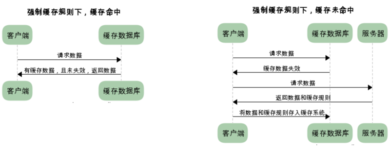
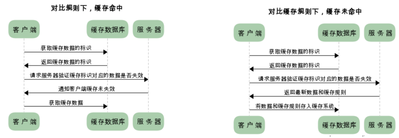
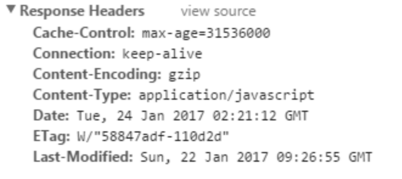
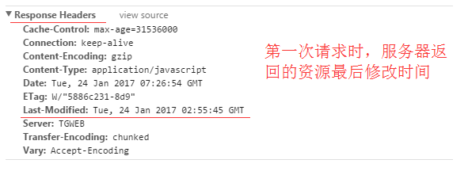
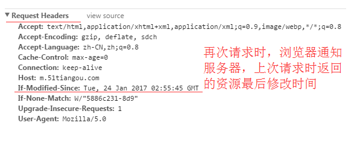
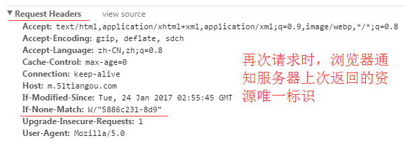

参考
HTTP缓存有多种规则，根据是否需要重新向服务器发起请求来分类，我将其分为两大类(强制缓存，对比缓存)
在详细介绍这两种规则之前，先通过时序图的方式，让大家对这两种规则有个简单了解
已存在缓存数据时，仅基于强制缓存，请求数据的流程如下：

已存在缓存数据时，仅基于对比缓存，请求数据的流程如下：

我们可以看到两类缓存规则的不同，强制缓存如果生效，不需要再和服务器发生交互，而对比缓存不管是否生效，都需要与服务端发生交互。
两类缓存规则可以同时存在，强制缓存优先级高于对比缓存，也就是说，当执行强制缓存的规则时，如果缓存生效，直接使用缓存，不再执行对比缓存规则。
强制缓存
从上文我们得知，强制缓存，在缓存数据未失效的情况下，可以直接使用缓存数据，那么浏览器是如何判断缓存数据是否失效呢？
我们知道，在没有缓存数据的时候，浏览器向服务器请求数据时，服务器会将数据和缓存规则一并返回，缓存规则信息包含在响应header中。
对于强制缓存来说，响应header中会有两个字段来标明失效规则（Expires/Cache-Control）使用chrome的开发者工具，可以很明显的看到对于强制缓存生效时，网络请求的情况。
Expires
Expires的值为服务端返回的到期时间，即下一次请求时，请求时间小于服务端返回的到期时间，直接使用缓存数据。
不过Expires 是HTTP 1.0的东西，现在默认浏览器均默认使用HTTP 1.1，所以它的作用基本忽略
另一个问题是，到期时间是由服务端生成的，但是客户端时间可能跟服务端时间有误差，这就会导致缓存命中的误差。
所以HTTP 1.1 的版本，使用Cache-Control替代。
Cache-Control
Cache-Control 是最重要的规则。常见的取值有private、public、no-cache、max-age，no-store，默认为private。
<meta http-equiv="Cache-Control" content="no-cache" />
- private: 客户端可以缓存
- public: 客户端和代理服务器都可缓存（前端的同学，可以认为public和private是一样的）
- max-age=xxx: 缓存的内容将在 xxx 秒后失效
- no-cache: 需要使用对比缓存来验证缓存数据（后面介绍）
- no-store: 所有内容都不会缓存，强制缓存，对比缓存都不会触发
举个例子：

图中Cache-Control仅指定了max-age，所以默认为private，缓存时间为31536000秒（365天）也就是说，在365天内再次请求这条数据，都会直接获取缓存数据库中的数据，直接使用。
没懂的话，我们换通俗一点的话来说一遍。当客户端第一次访问资源的时候，服务端在返回资源内容的同时也返回了Expires: Sun, 16 Oct 2016 05:43:02 GMT。
服务端告诉浏览器： 你Y的先把这个文件给我缓存起来，在这个过期时间之前，这个文件都不会变化了，你下次需要这个文件的时候，你就不要过来找我要了，你就去缓存中拿就好了，又快又好。
浏览器回答说：诺。
于是在第二次html页面中又要访问这个资源的时候，并且访问的日期在Sun, 16 Oct 2016 05:43:02 GMT之前，浏览器就不去服务器那边获取文件了，自己从缓存中自食其力了。
但是呢，浏览器毕竟是在客户端的，客户端的时间可是不准确的，用户可以随着自己的喜好修改自己机器的时间，比如我把我机器的时间调成Sun, 16 Oct 2016 05:43:03 GMT，那么呢？我的浏览器就不会再使用缓存了，而每次都去服务器获取文件。于是，服务器怒了：给你个绝对时间，你由于环境被修改没法判断过期，那么我就给你相对时间吧。于是就返回了Cache-Control: max-age:600，浏览器你给我缓存个10分钟去。于是浏览器只有乖乖的缓存10分钟了。
但是问题又来了，如果有的服务器同时设置了Expires和Cache-Control怎么办呢？（不是闲的没事干，而是由于Cache-Controll是HTTP1.1中才有的）那么就是根据更先进的设置Cache-Control来为标准。
好了，现在有个问题，我有个文件可能时不时会更新，服务端非常希望客户端能时不时过来问一下这个文件是否过期，如果没有过期，服务端不返回数据给你，只告诉浏览器你的缓存还没有过期（304）。然后浏览器使用自己存储的缓存来做显示。这个就叫做条件请求
对比缓存
对比缓存，顾名思义，需要进行比较判断是否可以使用缓存。浏览器第一次请求数据时，服务器会将缓存标识与数据一起返回给客户端，客户端将二者备份至缓存数据库中。
再次请求数据时，客户端将备份的缓存标识发送给服务器，服务器根据缓存标识进行判断，判断成功后，返回304状态码，通知客户端比较成功，可以使用缓存数据。
对于对比缓存来说，缓存标识的传递是我们着重需要理解的，它在请求header和响应header间进行传递，一共分为两种标识传递，接下来，我们分开介绍。
Last-Modified / If-Modified-Since
Last-Modified：服务器在响应请求时，告诉浏览器资源的最后修改时间。

If-Modified-Since：
再次请求服务器时，通过此字段通知服务器上次请求时，服务器返回的资源最后修改时间。
服务器收到请求后发现有头If-Modified-Since 则与被请求资源的最后修改时间进行比对。
若资源的最后修改时间大于If-Modified-Since，说明资源又被改动过，则响应整片资源内容，返回状态码200；若资源的最后修改时间小于或等于If-Modified-Since，说明资源无新修改，则响应HTTP 304，告知浏览器继续使用所保存的cache。

Etag / If-None-Match（优先级高于Last-Modified / If-Modified-Since）
第一次客户端访问资源的时候，服务端返回资源内容的同时返回了ETag：1234，告诉客户端：这个文件的标签是1234，我如果修改了我这边的资源的话，这个标签就会不一样了。
第二次客户端访问资源的时候，由于缓存中已经有了Etag为1234的资源，客户端要去服务端查询的是这个资源有木有过期呢？所以带上了If-None-Match: 1234。告诉服务端：如果你那边的资源还是1234标签的资源，你就返回304告诉我，不需要返回资源内容了。如果不是的话，你再返回资源内容给我就行了。服务端就比较下Etag来看是返回304还是200。
